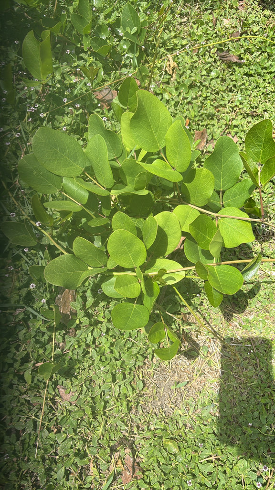

- At high noon on the beach, the Beach Bean folds its leaflets edge-on against each other — actively minimizing its sun-exposed surface like a sailor reefing sails in a storm, a mechanical trick that lets it thrive in conditions that would incinerate most plants.
- A true ocean voyager: its thick, woody pods drop seeds buoyed by internal air pockets that can ride the Gulf Stream and other major currents across entire ocean basins, sometimes washing ashore years later, ready to colonize a brand-new dune.
- A sprawling Florida-native vine that runs across open sand just above the tide line, helping hold the dune in place.
- Those raw seeds are toxic — a reminder that "bean" does not always mean food.
Native to tropical and subtropical beaches around the world, including Florida's coasts. A pioneering plant of open dunes and sandy shorelines just above the high-tide line.
- Beach bean is a true coastal pioneer — a tough, salt- and sun-tolerant native legume that sends long runners sprawling across bare sand at the top of the beach. Those runners root as they go, knitting the loose sand together and helping build and stabilize the foredune, quiet but important shoreline work.
- Its seeds are born travelers. The thick, woody pods that follow the flowers enclose seeds cushioned by internal air pockets, making them naturally buoyant. They can drop into the surf, catch a current like the Gulf Stream, and drift across entire ocean basins for years before washing ashore on a distant beach — where they promptly put down roots and begin the whole dune-building enterprise again.
- It is one reason this single species turns up on tropical and subtropical shorelines around the world.
- The plant comes with a caveat worth knowing. The raw seeds contain toxic compounds including canavanine and should never be eaten raw. In some coastal cultures, careful multi-stage soaking and boiling has historically been used to reduce those compounds enough to eat the seeds in times of extreme scarcity — but this is not a casual kitchen project. Admire the pods; leave them on the vine.
Beach sand is essentially a nutrient desert — almost no organic matter, no nitrogen, nothing for most plants to build on. Beach bean changes that by partnering with soil bacteria in its root nodules to pull nitrogen directly out of the air and fix it into the sand, acting as a philanthropist for the entire pioneer community.
Over time, that enriched soil makes the dune habitable for less rugged coastal plants and the insects and small animals that follow them.
Above ground, the pea flowers draw bees and other pollinators, and the sprawling runners provide low cover and shelter for small coastal fauna. The plant does not just hold the dune — it gradually turns bare sand into a functioning coastal ecosystem.
A sprawling, trailing native vine of open sand.
Pink to rose-purple pea flowers in clusters.
Thick, woody, oblong pods containing hard seeds.
Compound with three rounded leaflets that fold and angle through the day.
Trace the infinite runner: pick any stem and follow it across the sand to see just how far a single vine can travel. Check the leaves at midday and spot the high-noon fold — the leaflets will have swiveled edge-on to the sun, minimizing their exposed surface.
Then inspect the nautical armor: pick up a pod and feel the thick, woody hull that keeps the seeds safe through a voyage of hundreds or thousands of ocean miles.
The raw seeds are toxic and should not be eaten — they contain canavanine and related compounds that cause vomiting and can cause serious harm in larger amounts. Keep children and pets away from the pods.
What makes this especially interesting is that coastal cultures facing famine historically unlocked these same seeds through rigorous multi-boil processing — soaking and boiling in multiple changes of water to drive off enough toxins to make them marginally edible as a last resort.
That ethnobotanical history is real, but it is not a process to attempt casually, and it does not make the raw seeds safe. Treat all parts of this plant as not for eating.
Canavalia rosea was long listed in Florida references under the synonym Canavalia maritima. The current accepted name is C. rosea; you may still encounter the older name in older nursery catalogs and some field guides.
The FNPS notes it can be aggressive in the landscape. This is a plant that wants to run — it is excellent where it has room and problematic where it does not. In dune restoration and large coastal plantings it is genuinely useful; in a tidy mixed border it will need management.

- © Randall Carter (CC-BY-NC), via iNaturalist
- © Franky McArthur (CC-BY-NC), via iNaturalist